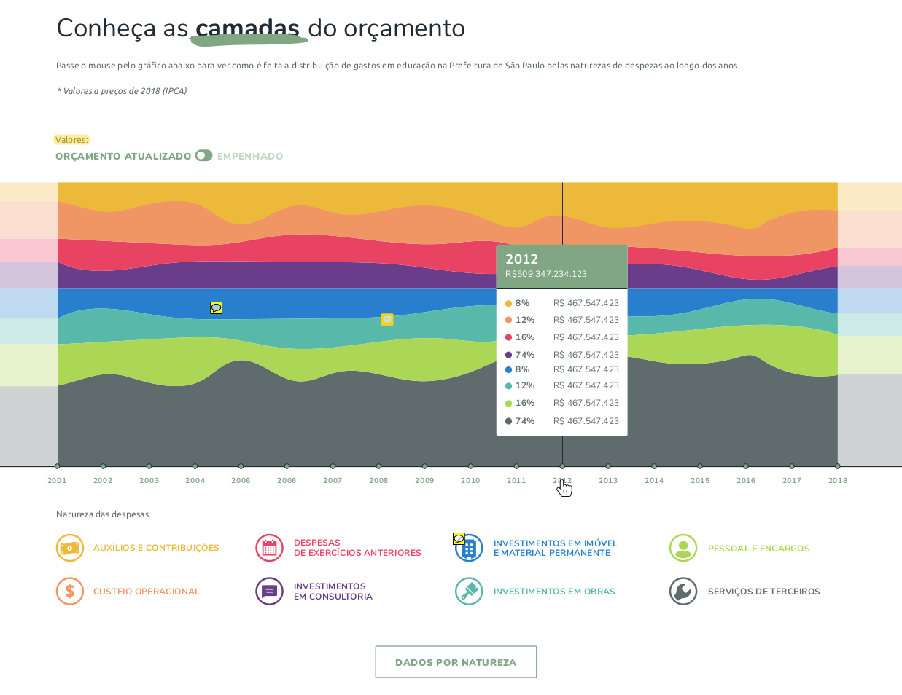
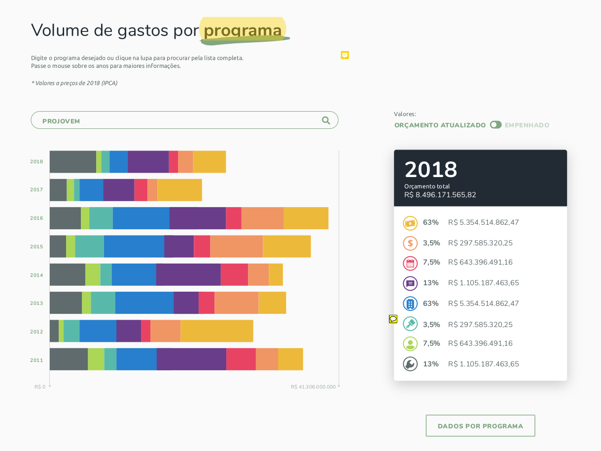

TUTORIAL ❯Geologia Orçamentária
A ferramenta Geologia Orçamentária é dividida em três visualizações integradas:
- Gráfico de área com a composição dos grupos de natureza de despesa em série histórica, com navegação interativa por meio de tool-tips e seletor do critério de execução;
- Gráfico de barras interativo com ferramenta de busca para um determinado tipo de despesa (subfunção), mostrando a evolução específica dessa despesa com navegação interativa por meio de tool-tips e seletor do critério de execução;
- Bubble-plot comparativo de subgrupos de despesa, que permitir ao usuário detectar diferenças entre tais categorias em anos selecionáveis, também com navegação interativa por meio de tool-tips e seletor do critério de execução;
TUTORIAL ❯ Gráfico de área
O primeiro gráfico é a razão do nome da ferramenta. Trata-se de uma apresentação das camadas do orçamento (naturezas de despesa) ao longo do tempo, conforme mostra a figura 1. É possível usar o seletor do canto direito superior para escolher entre despesas orçadas e empenhadas, ambas mostradas em valores corrigidos pela inflação. No gráfico, ao passar o mouse pelos anos, é possível ver a proporção de gastos para cada grupo de natureza de despesa em todos os anos disponíveis: 2003 até o mais recente. Logo abaixo do gráfico é possível verificar mais informações sobre os grupos de natureza apenas passando o mouse sobre as categorias, além de permitir ao usuário o download dos dados em .xls e .csv.

Figura 1: Gráfico de área do Geologia Orçamentária: gastos da Secretaria Municipal de Educação
TUTORIAL ❯Gráfico de barras
A segunda visualização que compõe o Geologia Orçamentária é composta por um campo de busca e um gráfico de barras cujo objetivo é mostrar a evolução temporal das despesas por natureza de despesa a partir de uma seleção realizada pelo usuário. Trata-se de um detalhamento em relação à primeira visualização, pois permite que o usuário encontre informações mais específicas sobre um determinado tipo de gasto, mantendo o recorte transversal de grupos de natureza no tempo.
A figura 2 apresenta um exemplo de seleção de subfunção: Educação Infantil. A navegação permite ver como os gastos nessa rubrica se distribuíram em grupos de natureza de despesa ao longo do tempo, tanto graficamente quanto textualmente com os valores do lado direito. Também é possível baixar os dados da seleção realizada em .xls e .csv.

Figura 2: Gráfico de barras do Geologia Orçamentária: seleção da subfunção "Educação Infantil"
TUTORIAL ❯Bubble-Plot
A terceira visualização que compõe o Geologia Orçamentária é composta por três elementos: um seletor de ano de exercício da despesa, uma relação de subgrupos que podem ser selecionados e um gráfico de bolhas (bubble-plot) que responde à seleção de subgrupos.
O objetivo é permitir comparação de despesas a partir do tamanho das bolhas: o usuário pode escolher até três subgrupos e compará-los entre si em termos da distribuição dos gastos em grupos de natureza de despesa e no tempo, alterando a chave de ano.
Na figura 3, apresentamos um exemplo de comparação entre os subgrupos de Alimentação, Transporte e Uniforme Escolar para o ano de 2018. Com isso percebemos as semelhanças e diferenças entre os gastos e podemos, a partir do seletor de ano, verificar como isso mudou ao longo do tempo.
Figura 3: Gráfico bubble-plot do Geologia Orçamentária: seleção dos subgrupos "Alimentação Escolar", "Transporte Escolar" e "Uniformes e Material Escolar" no ano de 2018.